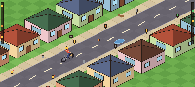

Layar dipegang dengan dua tangan. Jempol kiri memegang stick analog untuk kemudi dan kecepatan, jempol kanan khusus melempar dengan swipe. Tidak ada tombol rem terpisah. Kiri dan kanan mengikuti arah pelempar, bukan arah layar.

1 · KEMUDI DAN KECEPATAN
jempol kiri, stick analog melayang
ATAS · kayuh keras
BAWAH · melambat
tarik penuh dan tahan = rem
KIRI
sisi seberang
KANAN
sisi dekat
2 · LEMPAR
jempol kanan, swipe di mana saja di sisi kanan layar
Swipe kiri, pendek
sisi seberang, lemparan pelan
Swipe kanan, panjang
sisi dekat, lemparan kencang
KORAN
STAMINA
1 · Kemudi dan kecepatan
JEMPOL KIRI, STICK ANALOG
Stick muncul di tempat jempol menyentuh zona kiri bawah.
Kiri atau kanan: pindah ke sisi seberang atau sisi dekat, mengikuti arah pelempar.
Atas: kayuh keras, cepat tapi stamina terkuras. Netral: kayuh santai, laju stabil. Bawah: melambat dan meluncur, stamina pulih.
Diagonal bekerja bersamaan, misalnya atas-kiri untuk ngebut sambil belok.
Rem tanpa tombol
UJUNG BAWAH STICK
Tarik stick penuh ke bawah dan tahan: makin lama, sepeda makin pelan sampai berhenti perlahan.
Jempol tidak pindah, jadi kemudi tetap terjaga saat anjing muncul.
Ambang rem dibuat di ujung bawah supaya sepeda tidak berhenti tanpa sengaja saat belok.
Dipakai untuk melempar tepat dan menangkap kucing.
2 · Lempar
JEMPOL KANAN, SWIPE
Swipe kiri atau kanan di mana saja di sisi kanan layar: kiri ke sisi seberang, kanan ke sisi dekat.
Swipe panjang melempar kencang dan jauh, swipe pendek pelan dan dekat.
Garis bidik putus-putus muncul selama jari ditahan, koran terlempar saat jari dilepas.
Koran tetap membawa kecepatan sepeda.
Bantuan dan uji coba
MODE BANTU
Tap sisi layar yang ada rumahnya untuk lempar otomatis ke kotak surat terdekat. Kecepatan bisa otomatis.
Opsi kidal: zona kiri dan kanan bisa ditukar.
PERLU DIUJI
Apakah ambang rem di ujung bawah stick nyaman tanpa berhenti tak sengaja?